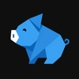

Exportado em 2026-10-01 16:09 · fonte: Lab Hub local
| App | Impressões | Página | Instalou | Abriu o app | Onboarding completo | Viu paywall | Iniciou compra | Comprou | CVR paywall→compra |
|---|---|---|---|---|---|---|---|---|---|
| Cloak: Hide & Lock Apps Vault | 68.895 | 2.983 (4.3%) | 1.835 (62%) | — | — | — | — | — | — |
| Secret Calculator Vault Photo | 54.038 | 2.320 (4.3%) | 2.045 (88%) | — | — | — | — | — | — |
 My Expenses: Personal Finances | 7.420 | 82 (1.1%) parcial | 17 (21%) parcial | 175 base maior | 27 (15%) | 200 base maior | 53 (26%) | 10 (19%) | 5.0% |
| Hair Schedule: Care Routine | 7.063 | 447 (6.3%) | 196 (44%) | 524 base maior | 440 (84%) | 468 (106%) | 21 (4.5%) | 9 (43%) | 1.9% |
| Walk: Steps & Calorie Tracker | 6.706 | 84 (1.3%) parcial | 71 (85%) parcial | 351 base maior | 258 (74%) | 311 base maior | 53 (17%) | 7 (13%) | 2.3% |
| iPhotos • Photo Collage editor | 6.373 | 14 (0.22%) parcial | 19 base maior parcial | 211 base maior | – | 269 base maior | 61 (23%) | 14 (23%) | 5.2% |
| Sueca Games • Never Have | 6.371 | 174 (2.7%) parcial | 53 (30%) parcial | 4 (7.5%) | – | – | – | – | — |
| Neon Glow Draw: Light Painting | 5.057 | – parcial | 6 (0.12%) parcial | 80 base maior | 73 (91%) | 92 base maior | 15 (16%) | 3 (20%) | 3.3% |
| BLW Baby Led Weaning Tracker | 3.719 | 119 (3.2%) parcial | 73 (61%) parcial | 362 base maior | 281 (78%) | 354 base maior | 99 (28%) | 31 (31%) | 8.8% |
| Truco Marcador • Conta Tento | 3.698 | 35 (0.95%) parcial | 42 base maior parcial | — | — | — | — | — | — |
| Bible Pills: Verses & Prayer | 3.469 | 17 (0.49%) parcial | – parcial | — | — | — | — | — | — |
| Sunrise Alarm Clock: Wake Up | 2.822 | 66 (2.3%) parcial | 20 (30%) parcial | 265 base maior | 226 (85%) | 18 sandbox | 8 sandbox | 6 sandbox | — |
| Controle de faltas e presença | 2.532 | 109 (4.3%) parcial | 45 (41%) parcial | 352 base maior | – | 176 (50%) | 7 (4.0%) | 4 (57%) | 2.3% |
| Rocket Pocket: Aim & Launch | 1.957 | 5 (0.26%) parcial | 5 (100%) parcial | — | — | — | — | — | — |
| My Way - Saúde e Alimentação | 1.818 | 5 (0.28%) | 5 (100%) | — | — | — | — | — | — |
| Philos: Philosophy & Stoicism | 1.393 | 6 (0.43%) parcial | 9 base maior parcial | — | — | — | — | — | — |
| Who Touched My Phone: WTMP | 1.097 | 15 (1.4%) parcial | – parcial | 118 base maior | 107 (91%) | – | – | – | — |
| Cronos • Task and Time Manager | 1.048 | 6 (0.57%) parcial | – parcial | 59 base maior | – | – | – | – | — |
| Peptide Tracker: GLP-1 & Dose | 630 | – parcial | – parcial | 48 (7.6%) | 34 (71%) | – | – | – | — |
| SafeDoc: Document Vault & PDF | 534 | 9 (1.7%) parcial | – parcial | — | — | — | — | — | — |
| English for Devs - Devlingo | 269 | 13 (4.8%) parcial | – parcial | 38 base maior | 27 (71%) | 27 (100%) | 4 (15%) | 1 (25%) | 3.7% |
Impressões, página e instalou vêm do App Analytics da ASC; o resto são usuários únicos no Firebase (28d), com a % sobre quem abriu o app. “Viu paywall” acima de 100% é o mesmo usuário voltando em sessões diferentes. App sem Firebase não aparece aqui.
janela de 28 dias · dados de 2026-10-01 08:56 · fonte: Firebase/GA4
core_action, review_prompt_requested — ou ninguém passou por esse caminho, ou o log não dispara de fatoonboarding_complete → onboarding_completed, onboarding_step → onboarding_step_viewed, paywall_view → paywall_shown, purchase_start → purchase_startedfeature_usednotificação local ancorada no dado do próprio usuário, widget na home ou resumo semanal. Push de marketing não conta
| Evento (GA4, 28d) | Usuários | Contagem | ||
|---|---|---|---|---|
session_start | 159 | 502 | ||
first_open | 140 | 140 | ||
transaction_add | 66 | 665 | ||
category_create | 29 | 81 |
| Origem (loja) | Impressões | Página | Instalou | CVR |
|---|---|---|---|---|
| App referrer | 0 | 18 | 0 | – |
user_engagement | 159 | 3.427 | ||
onboarding_step | 143 | 373 | ||
paywall_view | 138 | 181 | ||
purchase_start | 31 | 33 |
screen_viewonboarding_startonboarding_completeonboarding_skip| Evento canônico faltando | Por que importa |
|---|---|
feature_used | adoção de feature — diz o que vale investir e o que cortar |
Renomear na próxima versão: onboarding_complete → onboarding_completed, onboarding_step → onboarding_step_viewed, paywall_view → paywall_shown, purchase_start → purchase_started
user_engagement | 159 | 3.427 |
screen_view | 159 | 3.261 |
session_start | 159 | 502 |
onboarding_step | 143 | 373 |
onboarding_start | 143 | 144 |
first_open | 140 | 140 |
paywall_view | 138 | 181 |
onboarding_complete | 105 | 105 |
transaction_add | 66 | 665 |
purchase_start | 31 | 33 |
onboarding_skip | 31 | 31 |
category_create | 29 | 81 |
transaction_edit | 24 | 75 |
transaction_delete | 21 | 48 |
os_update | 17 | 19 |
recurrent_add | 12 | 38 |
purchase_success | 9 | 10 |
category_delete | 7 | 49 |
recurrent_delete | 5 | 6 |
recurrent_edit | 3 | 4 |
login | 2 | 2 |
purchase_restore | 2 | 2 |
app_store_subscription_convert | 1 | 1 |
app_update | 1 | 1 |
| 45.3.1 | 159 |
| Brazil | 48 |
| Germany | 20 |
| France | 13 |
| Italy | 7 |
| Austria | 6 |
| Russia | 5 |
| Sri Lanka | 5 |
| Spain | 4 |
| add_transaction | 140 |
| transactions | 95 |
| dashboards | 88 |
| (not set) | 146 |
| goals | 74 |
| settings | 70 |
| category_creator | 41 |
| recurrent_expenses | 35 |
crash-free 93,7% na 1.1.0, que é a versão publicada. Stack traces no console do Crashlytics; conferir se os dSYMs do CI estão subindo, senão o trace vem ilegível
screen_viewfirst_openonboarding_step_viewedtab_viewed| Origem (loja) | Impressões | Página | Instalou | CVR |
|---|
user_engagementpaywall_shownpaywall_dismissedpermission_resultscreen_view | 557 | 9.441 |
user_engagement | 556 | 10.823 |
session_start | 553 | 2.017 |
first_open | 524 | 526 |
paywall_shown | 468 | 523 |
feature_used | 461 | 3.021 |
onboarding_step_viewed | 453 | 1.283 |
paywall_dismissed | 442 | 461 |
onboarding_completed | 440 | 447 |
tab_viewed | 378 | 3.735 |
permission_result | 235 | 274 |
core_action | 130 | 362 |
os_update | 67 | 78 |
rating_gate_shown | 50 | 51 |
empty_state_viewed | 38 | 131 |
app_exception | 34 | 36 |
rating_gate_yes | 32 | 32 |
premium_gate_hit | 21 | 52 |
purchase_started | 21 | 27 |
purchase_abandoned | 13 | 17 |
rating_gate_no | 12 | 12 |
review_prompt_requested | 10 | 11 |
purchase_success | 9 | 9 |
rating_gate_dismissed | 5 | 5 |
app_store_subscription_renew | 3 | 18 |
rating_gate_feedback | 2 | 2 |
app_update | 1 | 1 |
| 1 | 0 |
| 1.1.0 | 504 |
| 1.2.0 | 53 |
| Brazil | 396 |
| United States | 24 |
| Dominican Republic | 22 |
| Italy | 17 |
| Russia | 12 |
| Germany | 9 |
| Colombia | 7 |
| Portugal | 6 |
| home | 501 |
| tutorials | 269 |
| calendar | 328 |
| (not set) | 545 |
| tutorial_detail | 170 |
| profile | 262 |
| onboarding | 448 |
| settings | 85 |
| Evento (GA4, 28d) | Usuários | Contagem | ||
|---|---|---|---|---|
session_start | 553 | 2.017 | ||
feature_used | 461 | 3.021 | ||
onboarding_completed | 440 | 447 | ||
core_action | 130 | 362 | ||
| App Store browse | 0 | 5 | 0 | – |
user_engagement | 378 | 4.295 | ||
first_open | 351 | 351 | ||
permission_result | 305 | 418 | ||
onboarding_completed | 258 | 265 |
| Origem (loja) | Impressões | Página | Instalou | CVR |
|---|
screen_viewpaywall_shownonboarding_step_viewedcore_actionRenomear na próxima versão: rating_gate_shown → review_prompt_requested (legado: versão publicada antiga ainda com o pré-prompt de avaliação — some no próximo release; não é métrica)
user_engagement | 378 | 4.295 |
screen_view | 378 | 2.498 |
session_start | 373 | 1.376 |
first_open | 351 | 351 |
paywall_shown | 311 | 496 |
permission_prompted | 310 | 363 |
permission_result | 305 | 418 |
onboarding_step_viewed | 302 | 923 |
paywall_dismissed | 277 | 447 |
onboarding_completed | 258 | 265 |
core_action | 255 | 1.151 |
feature_used | 216 | 1.409 |
onboarding_skipped | 69 | 77 |
purchase_started | 53 | 64 |
purchase_abandoned | 44 | 54 |
os_update | 27 | 34 |
app_exception | 18 | 25 |
rating_gate_shown | 16 | 19 |
rating_gate_positive | 11 | 11 |
rating_gate_store_prompted | 11 | 11 |
rating_gate_yes | 11 | 11 |
empty_state_viewed | 10 | 14 |
paywall_plan_selected | 9 | 32 |
purchase_success | 7 | 11 |
rating_gate_dismissed | 6 | 6 |
rating_gate_negative | 4 | 5 |
rating_gate_no | 4 | 5 |
app_store_subscription_renew | 2 | 2 |
| 7.3.0 | 378 |
| India | 135 |
| United States | 32 |
| Spain | 21 |
| Saudi Arabia | 17 |
| Germany | 13 |
| Pakistan | 9 |
| Philippines | 8 |
| Brazil | 7 |
| home | 256 |
| paywall | 311 |
| onboarding | 305 |
| settings | 139 |
| permission_denied | 89 |
| (not set) | 67 |
| 3 |
| Evento (GA4, 28d) | Usuários | Contagem | ||
|---|---|---|---|---|
session_start | 373 | 1.376 | ||
permission_prompted | 310 | 363 | ||
paywall_dismissed | 277 | 447 | ||
feature_used | 216 | 1.409 | ||
| App Store browse | 370 | 0 | 0 | 0.00% |
user_engagement | 548 | 5.921 | ||
screen_view | 383 | 6.687 | ||
paywall_shown | 269 | 327 | ||
feature_used | 208 | 590 |
| Origem (loja) | Impressões | Página | Instalou | CVR |
|---|
session_startapp_updatefirst_openpaywall_dismissedRenomear na próxima versão: onboarding_step → onboarding_step_viewed, rating_gate_shown → review_prompt_requested (legado: versão publicada antiga ainda com o pré-prompt de avaliação — some no próximo release; não é métrica)
user_engagement | 548 | 5.921 |
session_start | 544 | 761 |
onboarding_step | 468 | 1.740 |
screen_view | 383 | 6.687 |
app_update | 339 | 341 |
os_update | 334 | 343 |
paywall_shown | 269 | 327 |
first_open | 211 | 211 |
feature_opened | 208 | 943 |
feature_used | 208 | 590 |
paywall_dismissed | 197 | 221 |
layout_family_picked | 102 | 432 |
core_action | 74 | 264 |
photo_saved | 68 | 221 |
export_format | 68 | 146 |
purchase_started | 61 | 118 |
edit_tool_used | 51 | 359 |
layout_family_viewed | 44 | 229 |
layout_selected | 35 | 183 |
carousel_template | 29 | 138 |
rating_gate_shown | 21 | 21 |
photo_shared | 14 | 44 |
purchase_success | 14 | 16 |
carousel_saved | 12 | 16 |
permission_result | 12 | 16 |
rating_gate_yes | 12 | 12 |
restore_started | 6 | 6 |
app_store_subscription_convert | 4 | 4 |
| 29 | 542 |
| 28 | 9 |
| United States | 263 |
| United Kingdom | 33 |
| Canada | 29 |
| France | 22 |
| Australia | 15 |
| Russia | 14 |
| India | 13 |
| Spain | 13 |
| (not set) | 543 |
| home | 285 |
| layout_gallery | 127 |
| onboarding_2 | 295 |
| onboarding_3 | 273 |
| onboarding_4 | 262 |
| classic_editor | 72 |
| ShareVC/Interstitial | 42 |
| Evento (GA4, 28d) | Usuários | Contagem | ||
|---|---|---|---|---|
onboarding_step | 468 | 1.740 | ||
os_update | 334 | 343 | ||
feature_opened | 208 | 943 | ||
layout_family_picked | 102 | 432 | ||
| App Store browse | 586 | 12 | 0 | 0.00% |
user_engagementcore_actionscreen_view | 4 | 10 |
user_engagement | 4 | 6 |
first_open | 4 | 4 |
session_start | 4 | 4 |
core_action | 1 | 4 |
feature_used | 1 | 1 |
| 42.0.0 | 4 |
| Brazil | 2 |
| Ireland | 1 |
| United States | 1 |
| (not set) | 4 |
| home | 4 |
| game_most_likely | 1 |
| Origem (loja) | Impressões | Página | Instalou | CVR |
|---|---|---|---|---|
| App referrer | 0 | 6 | 0 | – |
| Evento (GA4, 28d) | Usuários | Contagem | ||
|---|---|---|---|---|
first_open | 4 | 4 | ||
feature_used | 1 | 1 | ||
| App Store search | 5.785 | 150 | 53 | 0.92% |
| Web referrer | 0 | 6 | 0 | – |
screen_view | 4 | 10 | ||
session_start | 4 | 4 |
rating_gate_shown → review_prompt_requestedcrash-free 96% na 28, que é a versão publicada. Stack traces no console do Crashlytics; conferir se os dSYMs do CI estão subindo, senão o trace vem ilegível
screen_viewonboarding_step_vieweddraw_strokefeature_used| Origem (loja) | Impressões | Página | Instalou | CVR |
|---|
user_engagementpaywall_showncore_actionpermission_resultRenomear na próxima versão: rating_gate_shown → review_prompt_requested (legado: versão publicada antiga ainda com o pré-prompt de avaliação — some no próximo release; não é métrica)
screen_view | 115 | 1.150 |
user_engagement | 114 | 1.243 |
session_start | 113 | 187 |
onboarding_step_viewed | 90 | 346 |
paywall_shown | 82 | 100 |
first_open | 80 | 80 |
draw_stroke | 78 | 2.809 |
core_action | 77 | 2.801 |
onboarding_completed | 73 | 73 |
feature_used | 71 | 436 |
permission_result | 63 | 64 |
rating_gate_shown | 49 | 50 |
app_update | 37 | 44 |
photo_add | 30 | 76 |
clear_tap | 26 | 499 |
undo_tap | 25 | 288 |
os_update | 24 | 24 |
record_start | 16 | 31 |
purchase_started | 15 | 15 |
onboarding_step | 12 | 44 |
paywall_dismissed | 12 | 16 |
record_stop | 11 | 19 |
paywall_view | 10 | 10 |
export_abandoned | 8 | 13 |
onboarding_complete | 7 | 7 |
purchase_abandoned | 7 | 7 |
app_exception | 5 | 8 |
premium_block | 3 | 4 |
| 28 | 98 |
| 27 | 12 |
| 26 | 6 |
| 25 | 4 |
| 24 | 3 |
| United States | 19 |
| Brazil | 12 |
| Russia | 7 |
| Vietnam | 7 |
| Canada | 6 |
| China | 6 |
| South Korea | 6 |
| France | 4 |
| (not set) | 114 |
| gallery | 36 |
| ViewController/Interstitial | 21 |
| 1 |
| Evento (GA4, 28d) | Usuários | Contagem | ||
|---|---|---|---|---|
session_start | 113 | 187 | ||
first_open | 80 | 80 | ||
onboarding_completed | 73 | 73 | ||
rating_gate_shown | 49 | 50 | ||
| App referrer | 0 | 63 | 44 | – |
| Evento (GA4, 28d) | Usuários | Contagem | ||
|---|---|---|---|---|
session_start | 417 | 993 | ||
onboarding_step_viewed | 350 | 1.058 | ||
paywall_dismissed | 263 | 360 | ||
core_action | 141 | 1.544 |
| Origem (loja) | Impressões | Página | Instalou | CVR |
|---|---|---|---|---|
| App Store browse | 0 | 0 | 0 | – |
user_engagement | 418 | 2.489 | ||
first_open | 362 | 362 | ||
onboarding_completed | 281 | 282 | ||
food_viewed | 177 | 934 |
screen_viewpaywall_showntab_viewedfood_log_saved| Evento canônico faltando | Por que importa |
|---|---|
feature_used | adoção de feature — diz o que vale investir e o que cortar |
Renomear na próxima versão: rating_gate_shown → review_prompt_requested (legado: versão publicada antiga ainda com o pré-prompt de avaliação — some no próximo release; não é métrica)
user_engagement | 418 | 2.489 |
screen_view | 418 | 1.268 |
session_start | 417 | 993 |
first_open | 362 | 362 |
paywall_shown | 354 | 463 |
onboarding_step_viewed | 350 | 1.058 |
onboarding_completed | 281 | 282 |
tab_viewed | 272 | 1.374 |
paywall_dismissed | 263 | 360 |
food_viewed | 177 | 934 |
food_log_saved | 143 | 1.564 |
core_action | 141 | 1.544 |
rating_gate_shown | 116 | 117 |
purchase_started | 99 | 109 |
rating_gate_dismissed | 83 | 83 |
recipe_viewed | 78 | 192 |
food_log_opened | 71 | 317 |
purchase_abandoned | 68 | 75 |
rating_gate_no | 62 | 62 |
recipes_opened | 54 | 72 |
post_abandon_outcome | 53 | 58 |
os_update | 46 | 51 |
food_log_deleted | 41 | 119 |
app_update | 37 | 37 |
rating_gate_yes | 32 | 32 |
purchase_success | 31 | 31 |
tips_opened | 29 | 32 |
allergens_opened | 26 | 29 |
| 1.5.3 | 409 |
| 1.5.2 | 5 |
| 1.5.0 | 2 |
| 1.5.1 | 2 |
| United States | 64 |
| Spain | 44 |
| Russia | 30 |
| Brazil | 28 |
| Mexico | 24 |
| United Kingdom | 20 |
| Germany | 18 |
| Hungary | 15 |
| (not set) | 418 |
rating_gate_shown → review_prompt_requestedcrash-free 98,7% na 1.3.0, que é a versão publicada. Stack traces no console do Crashlytics; conferir se os dSYMs do CI estão subindo, senão o trace vem ilegível
session_startonboarding_step_viewedpermission_resultrating_gate_shownRenomear na próxima versão: rating_gate_shown → review_prompt_requested (legado: versão publicada antiga ainda com o pré-prompt de avaliação — some no próximo release; não é métrica)
user_engagement | 267 | 4.456 |
session_start | 267 | 1.115 |
first_open | 265 | 267 |
screen_view | 257 | 2.575 |
onboarding_step_viewed | 245 | 766 |
onboarding_completed | 226 | 226 |
tab_viewed | 196 | 1.633 |
permission_result | 187 | 468 |
core_action | 186 | 1.148 |
feature_used | 157 | 626 |
rating_gate_shown | 134 | 134 |
rating_gate_answered | 104 | 104 |
paywall_shown | 18 | 44 |
onboarding_skipped | 13 | 13 |
os_update | 11 | 12 |
paywall_dismissed | 9 | 18 |
purchase_started | 8 | 13 |
purchase_success | 6 | 7 |
app_store_subscription_renew | 5 | 23 |
app_exception | 4 | 6 |
purchase_abandoned | 4 | 5 |
rating_gate_feedback_sent | 4 | 4 |
app_update | 2 | 2 |
| 1.3.0 | 239 |
| 1.4.0 | 30 |
| Brazil | 50 |
| France | 29 |
| Germany | 27 |
| Spain | 24 |
| United States | 24 |
| Poland | 13 |
| Italy | 12 |
| Netherlands | 10 |
| alarm | 239 |
| stats | 151 |
| (not set) | 255 |
| settings | 137 |
| sleep | 79 |
| paywall | 23 |
| tips | 34 |
| 22 |
| Origem (loja) | Impressões | Página | Instalou | CVR |
|---|---|---|---|---|
| Web referrer | 0 | 10 | 0 | – |
| Evento (GA4, 28d) | Usuários | Contagem | ||
|---|---|---|---|---|
first_open | 265 | 267 | ||
onboarding_completed | 226 | 226 | ||
core_action | 186 | 1.148 | ||
rating_gate_answered | 104 | 104 | ||
| App Store search | 2.822 | 20 | 0 | 0.00% |
| App referrer | 0 | 26 | 20 | – |
user_engagement | 267 | 4.456 | ||
screen_view | 257 | 2.575 | ||
tab_viewed | 196 | 1.633 | ||
feature_used | 157 | 626 |
mexer em preço, período em destaque e trial pelo PaywallKit, medindo por source. Não trocar hard/soft só com esses números
| Evento (GA4, 28d) | Usuários | Contagem | ||
|---|---|---|---|---|
session_start | 569 | 2.097 | ||
miss_increment | 383 | 4.458 | ||
subject_add | 269 | 1.109 | ||
purchase_screen_view | 178 | 349 |
| Origem (loja) | Impressões | Página | Instalou | CVR |
|---|---|---|---|---|
| App referrer | 0 | 28 | 0 | – |
user_engagement | 572 | 15.001 | ||
core_action | 430 | 5.548 | ||
first_open | 352 | 354 | ||
app_update | 243 | 290 |
screen_viewother_app_shownsubject_openmiss_decrementuser_engagement | 572 | 15.001 |
screen_view | 572 | 12.874 |
session_start | 569 | 2.097 |
core_action | 430 | 5.548 |
other_app_shown | 407 | 2.987 |
miss_increment | 383 | 4.458 |
first_open | 352 | 354 |
subject_open | 335 | 2.073 |
subject_add | 269 | 1.109 |
app_update | 243 | 290 |
miss_decrement | 233 | 1.014 |
purchase_screen_view | 178 | 349 |
paywall_shown | 176 | 344 |
rating_gate_shown | 155 | 229 |
os_update | 151 | 186 |
feature_used | 127 | 613 |
calculator_use | 97 | 287 |
rating_gate_dismissed | 73 | 103 |
rating_gate_no | 67 | 79 |
ad_interstitial_shown | 55 | 112 |
note_edit | 39 | 328 |
other_app_tapped | 39 | 47 |
event_create | 33 | 162 |
rating_gate_yes | 31 | 33 |
rating_gate_feedback | 8 | 8 |
review_prompt_requested | 8 | 8 |
purchase_started | 7 | 9 |
purchase_tap | 7 | 9 |
| 24 | 468 |
| 23 | 258 |
| 22 | 4 |
| 20 | 2 |
| Brazil | 434 |
| Spain | 56 |
| India | 33 |
| Portugal | 11 |
| Germany | 6 |
| Japan | 6 |
| Mexico | 3 |
| United Kingdom | 3 |
| (not set) | 560 |
| 74 | |
| SubjectTableController/Interstitial | 52 |
ga4_pull.py realtime --property 552891433 com o app aberto no device. Se o projeto nasceu sem GA vinculado, addGoogleAnalytics resolve sem build novo (LEARNINGS #38)
| Origem (loja) | Impressões | Página | Instalou | CVR |
|---|
rating_gate_shown → review_prompt_requestednotificação local ancorada no dado do próprio usuário, widget na home ou resumo semanal. Push de marketing não conta
| Evento (GA4, 28d) | Usuários | Contagem | ||
|---|---|---|---|---|
first_open | 118 | 118 | ||
core_action | 94 | 754 | ||
intruder_captured | 80 | 855 | ||
stealth_activated | 63 | 177 |
| Origem (loja) | Impressões | Página | Instalou | CVR |
|---|---|---|---|---|
| App referrer | 0 | 5 | 0 | – |
user_engagement | 119 | 1.229 | ||
onboarding_step_viewed | 116 | 344 | ||
protection_armed | 94 | 754 | ||
alarm_fired | 80 | 563 |
session_startonboarding_completedprotection_disarmedrating_gate_shownRenomear na próxima versão: rating_gate_shown → review_prompt_requested (legado: versão publicada antiga ainda com o pré-prompt de avaliação — some no próximo release; não é métrica)
user_engagement | 119 | 1.229 |
session_start | 119 | 264 |
first_open | 118 | 118 |
onboarding_step_viewed | 116 | 344 |
onboarding_completed | 107 | 256 |
core_action | 94 | 754 |
protection_armed | 94 | 754 |
protection_disarmed | 92 | 725 |
intruder_captured | 80 | 855 |
alarm_fired | 80 | 563 |
rating_gate_shown | 64 | 64 |
stealth_activated | 63 | 177 |
feature_used | 41 | 102 |
photo_capture_toggled | 41 | 102 |
permission_result | 37 | 64 |
rating_gate_yes | 35 | 35 |
wrong_passcode | 25 | 295 |
rating_gate_no | 21 | 22 |
screen_view | 20 | 139 |
rating_gate_dismissed | 8 | 8 |
os_update | 6 | 7 |
app_exception | 2 | 2 |
rating_gate_feedback | 2 | 2 |
| 1.0.0 | 119 |
| United States | 17 |
| Saudi Arabia | 12 |
| India | 10 |
| Brazil | 9 |
| Japan | 7 |
| Russia | 6 |
| Algeria | 5 |
| Indonesia | 5 |
| (not set) | 111 |
| 12 |
notificação local ancorada no dado do próprio usuário, widget na home ou resumo semanal. Push de marketing não conta
screen_viewfirst_opencore_actionreview_prompt_requested| Origem (loja) | Impressões | Página | Instalou | CVR |
|---|
user_engagementempty_state_viewedapp_updaterating_gate_shownscreen_view | 72 | 1.310 |
user_engagement | 71 | 1.150 |
session_start | 71 | 235 |
first_open | 59 | 59 |
empty_state_viewed | 58 | 74 |
feature_used | 49 | 172 |
core_action | 18 | 230 |
app_update | 17 | 21 |
os_update | 12 | 12 |
review_prompt_requested | 3 | 3 |
rating_gate_shown | 2 | 2 |
rating_gate_dismissed | 1 | 1 |
rating_gate_yes | 1 | 1 |
| 17 | 52 |
| 18 | 25 |
| Brazil | 34 |
| Russia | 5 |
| United States | 5 |
| Australia | 3 |
| Mexico | 3 |
| Canada | 2 |
| Colombia | 2 |
| Denmark | 2 |
| (not set) | 71 |
| matrix | 68 |
| list | 49 |
| task_editor | 15 |
| deadlines | 45 |
| rename_quadrants | 7 |
| reminder_settings | 5 |
| 2 |
| Evento (GA4, 28d) | Usuários | Contagem | ||
|---|---|---|---|---|
session_start | 71 | 235 | ||
feature_used | 49 | 172 | ||
os_update | 12 | 12 | ||
rating_gate_dismissed | 1 | 1 | ||
| App Store browse | 17 | 0 | 0 | 0.00% |
user_engagement | 48 | 535 | ||
screen_view | 45 | 385 | ||
onboarding_completed | 34 | 34 | ||
core_action | 19 | 124 |
| Origem (loja) | Impressões | Página | Instalou | CVR |
|---|
session_startonboarding_step_viewedpermission_resultempty_state_vieweduser_engagement | 48 | 535 |
session_start | 48 | 124 |
first_open | 48 | 48 |
screen_view | 45 | 385 |
onboarding_step_viewed | 38 | 138 |
permission_prompted | 35 | 35 |
onboarding_completed | 34 | 34 |
permission_result | 34 | 34 |
tab_viewed | 31 | 216 |
core_action | 19 | 124 |
empty_state_viewed | 19 | 31 |
rating_gate_shown | 12 | 12 |
app_exception | 7 | 7 |
onboarding_skipped | 7 | 7 |
rating_gate_yes | 6 | 6 |
os_update | 5 | 7 |
rating_gate_no | 3 | 3 |
feature_used | 2 | 4 |
rating_gate_dismissed | 1 | 1 |
rating_gate_feedback | 1 | 1 |
review_prompt_requested | 1 | 1 |
| 1.1.3 | 46 |
| 1.1.2 | 2 |
| Germany | 12 |
| Brazil | 10 |
| United States | 8 |
| Austria | 4 |
| United Kingdom | 3 |
| Italy | 2 |
| Brunei | 1 |
| Dominican Republic | 1 |
| home | 42 |
| (not set) | 45 |
| log | 23 |
| labs | 17 |
| settings | 17 |
| Evento (GA4, 28d) | Usuários | Contagem |
|---|---|---|
first_open | 48 | 48 |
permission_prompted | 35 | 35 |
tab_viewed | 31 | 216 |
rating_gate_shown | 12 | 12 |
session_startonboarding_completedfeature_usedcore_actionRenomear na próxima versão: rating_gate_shown → review_prompt_requested (legado: versão publicada antiga ainda com o pré-prompt de avaliação — some no próximo release; não é métrica)
user_engagement | 40 | 188 |
session_start | 39 | 59 |
first_open | 38 | 38 |
onboarding_step_viewed | 33 | 142 |
onboarding_completed | 27 | 31 |
paywall_shown | 27 | 31 |
paywall_dismissed | 24 | 26 |
feature_used | 19 | 292 |
phrase_listened | 17 | 270 |
phrase_learned | 17 | 112 |
core_action | 16 | 110 |
category_opened | 11 | 28 |
rating_gate_shown | 9 | 9 |
rating_gate_dismissed | 7 | 7 |
purchase_started | 4 | 4 |
screen_view | 2 | 3 |
os_update | 2 | 2 |
purchase_failed | 2 | 2 |
app_update | 1 | 1 |
purchase_success | 1 | 1 |
| 1.9.0 | 39 |
| 1.7.0 | 1 |
| Brazil | 16 |
| China | 13 |
| United States | 3 |
| Côte d’Ivoire | 1 |
| France | 1 |
| Germany | 1 |
| Mexico | 1 |
| Poland | 1 |
| (not set) | 37 |
| 4 |
| Origem (loja) | Impressões | Página | Instalou | CVR |
|---|
| Evento (GA4, 28d) | Usuários | Contagem | ||
|---|---|---|---|---|
first_open | 38 | 38 | ||
paywall_shown | 27 | 31 | ||
phrase_listened | 17 | 270 | ||
category_opened | 11 | 28 | ||
| App Store search | 269 | 13 | 0 | 0.00% |
user_engagement | 40 | 188 | ||
onboarding_step_viewed | 33 | 142 | ||
paywall_dismissed | 24 | 26 | ||
phrase_learned | 17 | 112 |
rating_gate_shown → review_prompt_requested, in_app_purchase → purchase_successfeature_used, permission_resultnotificação local ancorada no dado do próprio usuário, widget na home ou resumo semanal. Push de marketing não conta
| Evento (GA4, 28d) | Usuários | Contagem |
|---|---|---|
onboarding_step_viewed | 35 | 92 |
session_start | 33 | 50 |
screen_view | 29 | 546 |
core_action | 19 | 329 |
user_engagement | 35 | 535 |
first_open | 35 | 35 |
paywall_shown | 31 | 45 |
onboarding_complete | 27 | 27 |
onboarding_steponboarding_startpaywall_viewonboarding_completed| Evento canônico faltando | Por que importa |
|---|---|
feature_used | adoção de feature — diz o que vale investir e o que cortar |
permission_result | permissão negada mata a feature em silêncio |
Renomear na próxima versão: rating_gate_shown → review_prompt_requested (legado: versão publicada antiga ainda com o pré-prompt de avaliação — some no próximo release; não é métrica), in_app_purchase → purchase_success
user_engagement | 35 | 535 |
onboarding_step | 35 | 92 |
onboarding_step_viewed | 35 | 92 |
first_open | 35 | 35 |
onboarding_start | 35 | 35 |
session_start | 33 | 50 |
paywall_shown | 31 | 45 |
paywall_view | 31 | 45 |
screen_view | 29 | 546 |
onboarding_complete | 27 | 27 |
onboarding_completed | 27 | 27 |
core_action | 19 | 329 |
transaction_add | 19 | 329 |
app_exception | 18 | 234 |
rating_gate_shown | 15 | 15 |
rating_gate_yes | 13 | 13 |
category_create | 12 | 31 |
purchase_start | 11 | 11 |
purchase_started | 11 | 11 |
transaction_edit | 8 | 23 |
category_delete | 5 | 47 |
transaction_delete | 5 | 16 |
onboarding_skip | 4 | 4 |
purchase_restored | 3 | 13 |
export_share | 2 | 5 |
rating_gate_no | 2 | 2 |
recurrent_add | 2 | 2 |
app_store_subscription_renew | 1 | 10 |
| 45.4.0 | 35 |
| 45.3.1 | 1 |
| Brazil | 9 |
| Germany | 3 |
| Japan | 3 |
| Türkiye | 3 |
| France | 2 |
| Italy | 2 |
| Poland | 2 |
| United States | 2 |
| add_transaction | 29 |
| transactions | 19 |
| dashboards | 20 |
| goals | 16 |
| settings | 16 |
| category_creator | 15 |
| recurrent_expenses | 10 |
| extract_by_category | 1 |
purchase_success chegou, mas o evento existe no código — leitura: ninguém concluiu compra na janela (a receita do período vem de renovação, não de compra nova)core_action, feature_used, review_prompt_requested, purchase_started — ou ninguém passou por esse caminho, ou o log não dispara de fato2 pessoas somem antes de terminar. Cortar step, tirar permissão do começo, mostrar valor antes de pedir qualquer coisa
| Evento (GA4, 28d) | Usuários | Contagem |
|---|---|---|
screen_view | 3 | 4 |
onboarding_completed | 1 | 1 |
premium_gate_hit | 1 | 1 |
user_engagement | 3 | 6 |
session_start | 3 | 4 |
paywall_dismissed | 1 | 1 |
onboarding_step_viewedfirst_openpaywall_shownuser_engagement | 3 | 6 |
onboarding_step_viewed | 3 | 5 |
screen_view | 3 | 4 |
session_start | 3 | 4 |
first_open | 3 | 3 |
onboarding_completed | 1 | 1 |
paywall_dismissed | 1 | 1 |
paywall_shown | 1 | 1 |
premium_gate_hit | 1 | 1 |
| 1.0.0 | 3 |
| Brazil | 3 |
| onboarding | 3 |
| home | 1 |
| (not set) | 3 |
core_action, feature_used, review_prompt_requested — ou ninguém passou por esse caminho, ou o log não dispara de fatonotificação local ancorada no dado do próprio usuário, widget na home ou resumo semanal. Push de marketing não conta
| Evento (GA4, 28d) | Usuários | Contagem |
|---|---|---|
screen_view | 2 | 4 |
onboarding_completed | 1 | 1 |
user_engagement | 2 | 6 |
first_open | 2 | 2 |
onboarding_step_viewedsession_startuser_engagement | 2 | 6 |
onboarding_step_viewed | 2 | 4 |
screen_view | 2 | 4 |
first_open | 2 | 2 |
session_start | 2 | 2 |
onboarding_completed | 1 | 1 |
| 1.0.0 | 2 |
| Brazil | 2 |
| onboarding | 2 |
| setup | 1 |
| (not set) | 2 |
core_action, feature_used, review_prompt_requested, permission_result — ou ninguém passou por esse caminho, ou o log não dispara de fatonotificação local ancorada no dado do próprio usuário, widget na home ou resumo semanal. Push de marketing não conta
| Evento (GA4, 28d) | Usuários | Contagem |
|---|---|---|
onboarding_step_viewed | 2 | 4 |
onboarding_completed | 1 | 1 |
user_engagement | 2 | 7 |
first_open | 2 | 2 |
screen_viewsession_startuser_engagement | 2 | 7 |
screen_view | 2 | 5 |
onboarding_step_viewed | 2 | 4 |
first_open | 2 | 2 |
session_start | 2 | 2 |
onboarding_completed | 1 | 1 |
| 1.0.0 | 2 |
| Brazil | 2 |
| onboarding | 2 |
| setup_birth | 1 |
| setup_birth_details | 1 |
| setup_intent | 1 |
| (not set) | 2 |
core_action, onboarding_completed, feature_used, review_prompt_requested — ou ninguém passou por esse caminho, ou o log não dispara de fatonotificação local ancorada no dado do próprio usuário, widget na home ou resumo semanal. Push de marketing não conta
| Evento (GA4, 28d) | Usuários | Contagem |
|---|---|---|
screen_view | 1 | 1 |
first_opensession_startfirst_open | 1 | 1 |
onboarding_step_viewed | 1 | 1 |
screen_view | 1 | 1 |
session_start | 1 | 1 |
user_engagement | 1 | 1 |
| 1.0.0 | 1 |
| Brazil | 1 |
| onboarding | 1 |
| (not set) | 1 |
onboarding_step_vieweduser_engagement| App | Downloads 30d | Por quê | O que fazer |
|---|---|---|---|
| Truco Marcador • Conta Tento | 114 | sem Firebase Analytics no app | Adicionar Firebase Analytics + Crashlytics e os eventos canônicos — /firebase-insights instrumenta |
| Bible Pills: Verses & Prayer | 26 | sem Firebase Analytics no app | Adicionar Firebase Analytics + Crashlytics e os eventos canônicos — /firebase-insights instrumenta |
| Rocket Pocket: Aim & Launch | 16 | sem Firebase Analytics no app | Adicionar Firebase Analytics + Crashlytics e os eventos canônicos — /firebase-insights instrumenta |
| My Way - Saúde e Alimentação | 6 | sem Firebase Analytics no app | Adicionar Firebase Analytics + Crashlytics e os eventos canônicos — /firebase-insights instrumenta |
| SafeDoc: Document Vault & PDF | 5 | sem Firebase Analytics no app | Adicionar Firebase Analytics + Crashlytics e os eventos canônicos — /firebase-insights instrumenta |
| Libras 3D | 0 | sem Firebase Analytics no app | Adicionar Firebase Analytics + Crashlytics e os eventos canônicos — /firebase-insights instrumenta |
| Medic! App | 0 | sem Firebase Analytics no app | Adicionar Firebase Analytics + Crashlytics e os eventos canônicos — /firebase-insights instrumenta |